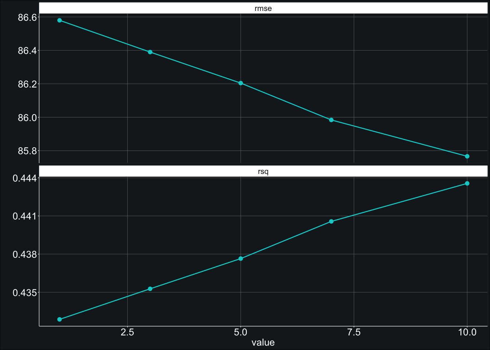
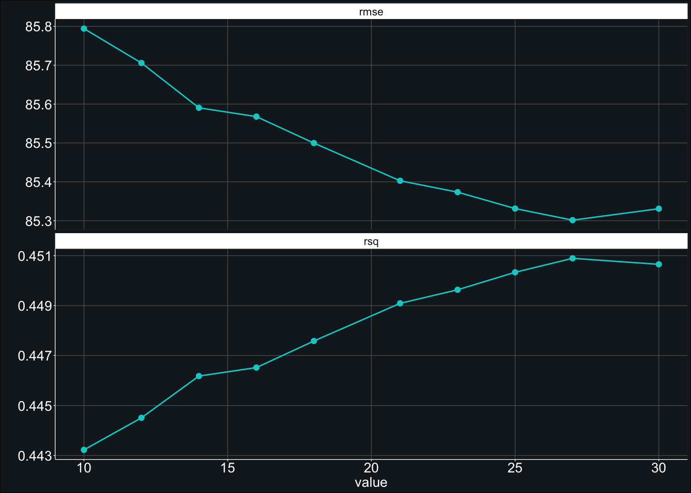

Tensor Flo Ridas: A Journey in ML
Introduction to Random Forest Models
On this page, we provide an overview of how to fit and tune a random forest model. But, before we can get into fitting and tuning any models, it is important to describe what exactly a random forest model is. Before we can do that, however, we must also describe what decision trees and bootstrap aggregation (bagging) are.
An intuitive way to think of a decision tree is in terms of the parlor game Twenty Questions (see Lecture 5 from Data Science Decal for an extended discussion of this analogy). In Twenty Questions, one person (i.e., the answerer) thinks of a person, place, or thing (e.g., a computer), and the other other players (i.e., the askers) are allowed to ask 20 “yes” or “no” questions about the person, place, or thing (e.g., “Is it living?”). If the askers cannot guess what the person, place, or thing is after asking their 20 questions, the answerer wins. If they can guess what the person, place, or thing, the askers win and the answerer loses.
With decision trees, the computer essentially does the same thing as the askers in Twenty Questions. It uses yes or no questions about the predictors in a dataset to try to “guess” (predict) some categorical or continuous outcome variable of interest. For example, in predicting how much coffee a person drinks, the model might first split its prediction based on the person’s age (e.g., “Are they older than 18?”) and then, from there, split the prediction for those who are over 18 years of age by location (e.g., “Are they from Oregon or not?”). If the answer to those two questions is “yes”, then the computer may predict that a person drinks considerably more coffee than if the answer to those two questions is “no”. Moreover, by doing this splitting recursively, the computer is able to capture the interactions between these variables, such that the computer can provide a different prediction for a person who is over 18 and from Oregon than a person who is just over 18 or just from Oregon.
The primary problem with a decision tree is that it can easily be overfit. If the tree is just left to grow deeper and deeper it will eventually be able to predict the outcome in the present data well (i.e., it would have low bias) but not be generalizable to other datasets (i.e., it would have high variance).
One could stop growing the tree early or prune the tree back when it has grown too deep to address this overfitting, but another option is to use bagging. With bagging, multiple decision trees are created on bootstrap resamples of the training data and then the predictions are averaged together (if the outcome is continuous) or the most frequently predicted value across the trees is used (if the outcome is categorical). In doing so, a bagged model will have lower variance than a single decision tree alone. Moreover, since it has fuzzier decision boundaries (resulting from averaging predictions together), a bagged model will also generally have lower bias than a single decision tree.
This reduction in bias and variance is, however, only possible if the trees are sufficiently different from each other. If every tree was exactly the same, the averaged predictions would be exactly the same as a single decision tree. Random forests attempt to make bagged decision trees more dissimilar by only including a subset of the available predictors at each split. Returning to the example from above, it seems plausible that, even operating on a bootstrapped subsample of the data, whether a person is older than 18 or not will generally be more telling of how much coffee a person drinks than if they are from Oregon or not. By providing only a subset of the predictors at each split—such as in the case of a Random Forest model—some of the decision trees will not have age as a predictor at the root node and will, therefore, have to rely on different predictors for the initial split. By adding this additional random component, a Random Forest model is able to more effectively reduce its variance (and, potentially, bias) than a bagged model alone.
Fitting an untuned random forest model
Creating the model
To fit a random forest model, we start by creating a specification of the model by using the random_forest() function from {parsnip}. In this case, since we are predicting a continuous variable (i.e., score), we will want to set the mode to "regression" (using the set_mode() function).
Within the set_engine() function, we will want to set the engine to "ranger". Although we could use "randomForest" as the engine, we are using "ranger" here because it is generally more computationally efficient. We will also want to set num.threads to the number of cores on our computer using detectCores() from the {parallel} package. This will allow ranger to parallelize the process of fitting the models, further speeding up computation times. We will also want to specify importance = "permutation" and verbose = TRUE. The former means that, when identifying the most important predictors among our models, the model will use permutation. In other words, predictors will be considered more important if shuffling their values results in greater prediction error. The latter means that R will tell us what step in the process we are at. Finally, we use set_args to set the number of trees to 500. This means that our random forest model will create 500 decision trees. Although this is less than the number of trees recommended by Kuhn and Johnson (2013), we chose 500 to further reduce computation times and minimize potential memory issues (i.e., exhausting vector memory in R).
model_rf <- rand_forest() %>%
set_mode("regression") %>%
set_engine(engine = "ranger",
num.threads = parallel::detectCores(),
importance = "permutation",
verbose = TRUE) %>%
set_args(trees = 500)Creating the workflow
Once we have created the model, we can combine it with the recipe (see The Data) using the workflow() function from the {workflows} package. This allows us to only pass a single object (e.g., workflow_rf) to fit our model instead of having to pass multiple objects (e.g., recipe_1 and model_rf).
# create workflow object
workflow_rf <- workflow() %>%
add_recipe(recipe_1) %>%
add_model(model_rf)Fitting the model
Now all that is left to do is to fit our model using fit_resamples. Here we used metrics = yardstick::metric_set(rmse, rsq) to request calculation of the average Root Mean Square Error (RMSE) and \(R^2\) for the model. We also used extract_model() to extract the model that was created during each resampling. This will allow us to illustrate the most important predictors using the vip() function (see the section on Extracting Important Predictors below). We also used the arguments tic() and toc() from the aptly named {tictoc} package to measure how long it takes the model to run.
# start timer
tictoc::tic()
# fit model
fit_rf <- fit_resamples(
object = workflow_rf,
resamples = data_train_cv,
metrics = yardstick::metric_set(rmse, rsq),
control = control_resamples(verbose = TRUE,
save_pred = TRUE,
extract = function(x) extract_model(x)))
# end timer
time1 <- tictoc::toc()## 154.771 sec elapsedChecking model metrics
Whew! It only took 154.771 seconds to run.
Now we can check the fit using the collect_metrics() function.
collect_metrics(fit_rf) # 86.17We can see that it had an RMSE of 86.17 and a \(R^2\) of 0.44. In other words, our predictors explained an average of 43.82% of the variability in the total scores. Going forward, we will use only RMSE to evaluate model performance.
Extracting important predictors
We can also check the most important predictors in our trees using the vip() argument.
pluck(fit_rf, ".extracts", 1, ".extracts", 1) %>%
vip(aesthetics = list(fill = "cyan3"), num_features = 20L) +
labs(x = "Predictor") +
theme_407()
As we can see, the student enrollment grade (enrl_grade) was one of the most important predictors when it came to predicting a student’s score. You might also notice that the graph of the important predictors has quite a long tail. If we had simply used bagging, the tail would have been a lot shorter. This is because, in Random Forest models, only a subset of the predictors is available when fitting each tree, resulting in some trees being fit without the strongest predictors that would generally serve as the root of the trees.
Fitting a tuned random forest model
With random forest models, there are three hyperparameters that can be tuned. The first is the number of trees, which we set to 500 in the previous model. With random forest models, people just have to ensure that there are enough trees to stabilize error rates. After the error rates are sufficiently stabilized, there are no other advantages of increasing the number of trees (and more trees will linearly increase computation times). As a result, people commonly only tune the minimum node size (min_n) and the number of predictors to be sampled at each split (mtry). The min_n hyperparameter controls how deep a tree will grow. A larger value will result in shallower trees, and a smaller value will result in deeper trees. The deeper a tree, the more likely it is to have high variance, whereas, the shallower a tree, the more likely it is to have high bias. The mtry hyperparameter, on the other hand, essentially controls how correlated a given set of trees will be. A higher value would be appropriate when a dataset has few relevant predictors (as it increases the chances that those predictors will be chosen), and a lower value would be appropriate when there are a large number of relevant predictors (as it allows predictors that are less strong but still relevant to form the base of the trees). To keep computation times down, we only provide an example of how to tune min_n here, but the process is quite similar for tuning mtry.
Below we add min_n = tune() to set_args() to tune the min_n hyperparameter.
Creating the model
model_rf_tune <- rand_forest() %>%
set_mode("regression") %>%
set_engine(engine = "ranger",
num.threads = parallel::detectCores(),
importance = "permutation",
verbose = TRUE) %>%
set_args(trees = 500,
min_n = tune())Updating the workflow object
Now that we have created this new model, we can update our workflow using the update_model function from {workflows}.
workflow_rf_tune <- workflow_rf %>%
update_model(model_rf_tune)Creating the tuning grid
We also have to tell {tidymodels} what values to use for min_n. To do so, we can use the grid_regular() argument from {dials}. Below we request that 5 values (levels) be chosen for min_n between 1 and 10.
# create grid
grid_rf <- grid_regular(min_n(range = c(1, 10)),
levels = 5)Fitting the model
Now, we can fit our model as we did above. However, we will want to use tune_grid() instead of fit_resamples() because we want to fit 500 decision trees using each of the 5 values of min_n that we specified above. We will also want to change object = workflow_rf to object = workflow_rf_tune to use our new workflow object. Finally, we will want to add grid = grid_rf so that tune_grid() knows what values of min_n to use.
# start timer
tictoc::tic()
# fit model
fit_rf_tune <- tune_grid(
object = workflow_rf_tune,
resamples = data_train_cv,
grid = grid_rf,
metrics = yardstick::metric_set(rmse, rsq),
control = control_resamples(verbose = TRUE,
save_pred = TRUE,
extract = function(x) extract_model(x)))
# end timer
time2 <- tictoc::toc()## 791.777 sec elapsedChecking model metrics
This time, it took 791.777 seconds to run. It is not surprising that it took longer, because we fit five times as many models as before.
Now we can use the show_best() function to examine our best fitting models.
show_best(fit_rf_tune, metric = "rmse", n = 5) # 85.77Here it appears that the best fitting model had a minimum node size of 10.00 and resulted in an RMSE of 85.77, a slight improvement over our previous RMSE of 86.17.
Plotting the tuned values
To visualize the trend, we can use autoplot() to show us how average fit varied across different values of min_n.
fit_rf_tune %>%
autoplot() +
geom_line(color = "cyan3") +
geom_point(color = "cyan3") +
theme_407()
Ah! It looks like the RMSE decreased all the way up to a min_n value of 10. Is it possible that it would have reduced even more if we had provided a min_n that was greater than 10?
Further tuning
We can test this by testing a different grid. Let’s try testing 10 min_n values between 10 to 30
# create grid
grid_rf_2 <- grid_regular(min_n(range = c(10, 30)),
levels = 10)To fit the model, we will simply substitute grid_rf for grid_rf_2.
# start timer
tictoc::tic()
# fit model
fit_rf_tune_2 <- tune_grid(
object = workflow_rf_tune,
resamples = data_train_cv,
grid = grid_rf_2,
metrics = yardstick::metric_set(rmse, rsq),
control = control_resamples(verbose = TRUE,
save_pred = TRUE,
extract = function(x) extract_model(x)))
# end timer
time3 <- tictoc::toc()## 1341.648 sec elapsedThe new model took 1341.648 seconds to fit. Again, it makes sense that this would be longer, because we are now testing 10 hyperparameters instead of 5.
We can then look at the metrics again…
show_best(fit_rf_tune_2, metric = "rmse", n = 10) # 85.3…and the plot showing average RMSE by min_n.
fit_rf_tune_2 %>%
autoplot() +
geom_line(color = "cyan3") +
geom_point(color = "cyan3") +
theme_407()
It looks like the best min_n (of the values we tested) was 27.00 which resulted in an average model RMSE of 85.30. This is marginally better than our previous best RMSE of 85.77.
Finalizing the model
Now that if we have finished training our model, we can test our model on the left out data. To do so, we will first want to use finalize_workflow() to update the workflow to use our most performant hyperparameters (i.e., min_n = 27.00).
workflow_rf_final <- finalize_workflow(
workflow_rf_tune,
select_best(fit_rf_tune_2, metric = "rmse")
)Then we fit our model on our initial split data (data_split) using last_fit().
# start timer
tictoc::tic()
# produce final fit
fit_rf_final <- last_fit(workflow_rf_final, split = data_split)
# end timer
time4 <- tictoc::toc()## 15.035 sec elapsedUnsurprisingly, the model fit much faster than our previous model, coming in at 15.035 seconds.
collect_metrics(fit_rf_final) # 87.25The RMSE for the final fit was 87.25.
Final thoughts
Although the final model on the assessment set had a greater RMSE (i.e., 87.25) than the last model fit on the analysis set (i.e., 85.30), it was not drastically so. As such, it does not appear that our model was overfit to our data. It is, however, possible that using a value for mtry other than the default may have further decreased the variance.
With respect to tuning min_n, even when only using 500 trees, testing only 15 different values for the minimum node size (i.e., min_n), and using only 10% of the data, the tuning models took over 35 minutes to run on a computer with 12 2.90GHz cores (hyper-threaded) with 16.00 of RAM. Moreover, the model RMSE only improved by 0.86. At least for this data, recipe, and model, the marginal improvement in the RMSE does not seem to outweigh the additional time required to tune min_n.